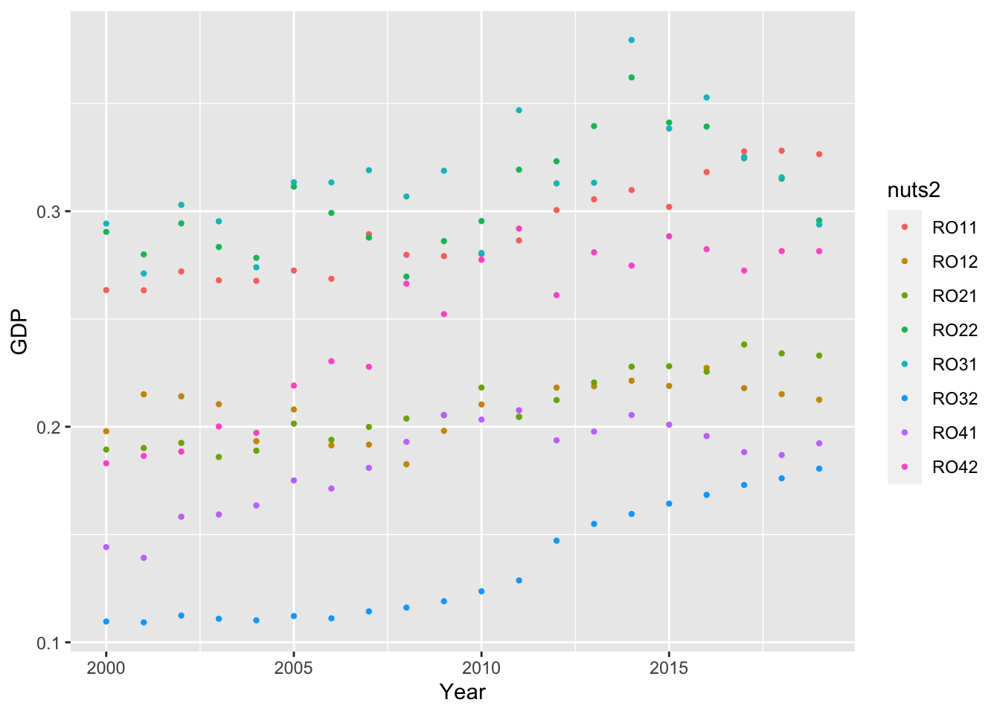
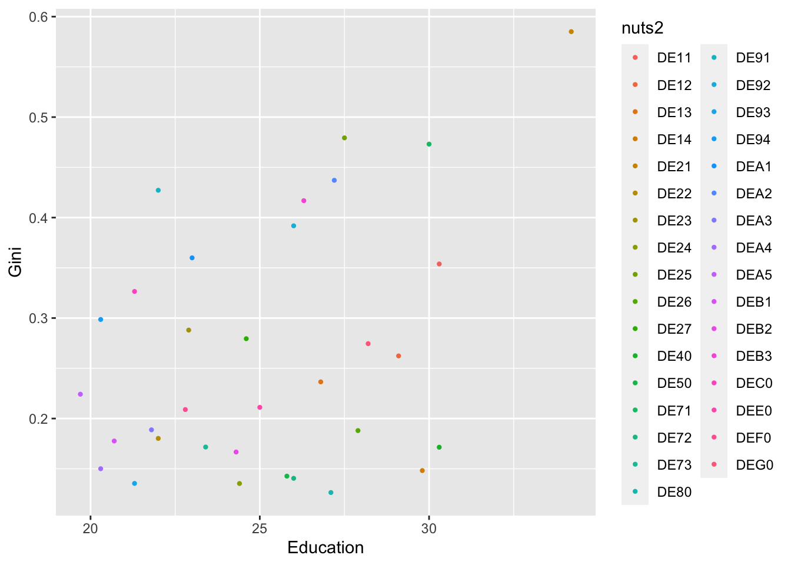

Show the code
library(tidyverse)
library(vtable)
library(dineq)
library(huxtable)This assignment consist of four parts where we will explore data sets from Eurostat and perform analysis to find statistic information.
The assignment will be built on as the various tasks are solved and presented as a complete quarto document at the end of the semester.
In this first assignment we will study sub-national gdp in the countries Germany, Finland and Romania using the data sets “Nama_10r_3gdp” and “demo_r_pjanaggr3” obtained from Eurostat. Below we will present which packages we have used to read and process the data we have used in the task, in addition to showing the procedure for how we have obtained new data. The results will be presented at the end of the assignment, along with a description and discussion of the included data.
There are several packages and datasets we need to use in this assignment. The packages is listed below :
library(tidyverse)
library(vtable)
library(dineq)library(tidyverse)
library(vtable)
library(dineq)
library(huxtable)The datafiles “Nama_10r_3gdp” and “Demo_r_pjanaggr3” contains different data. Next, we will present the datasets and their content.
Nama_10r_3gdp contains GDP data on nuts3 level for many countries. The data set is structured in different columns that present different data values. in this assignment, the following values are relevant to us: The GDP values we are looking for emerges from the column “OBS_VALUE”. The column “geo” tells which geographical region the values belong to. In the file there are rows for nuts0 to nuts3 level, for instance DE, DE1, DE11 and DE111. There is also a column for year named “TIME_PERIOD”. There are different types of GDP values and the unit is stored in a column named “UNIT”. We have chosen to use values where unit is MIO_EUR. This unit represents the GDP value in million euros. Furthermore, we examine whether the datasets have taken inflation into account using metadata. Nama_10_3gdp takes inflation into account when it comes to the unit of measure “price figure” in the data set, while volume figures are presented excluding inflation.
Demo_r_pjanaggr3 contains population data on nuts3 level. The structure is similar to the previous dataset we presented and contains columns as the other file with the same names for value, region and year. This file also have multiple values with different groupings. In the next section we specify which choices we have made regarding which data is used.
There is a column named “age” for age groups. We have chosen the rows where the age is TOTAL. Further there is a column for sex and we have choosen rows where sex = T. T refers to the total value for both males and females. The data set Demo_r_pjanaggr3 does not take inflation into account. The information that emerges from the data set deals with population data, which is not directly covered by inflation.
# Filter data and join the two datasets
mydata <- gdpdata %>%
# select only columns we need
select(Year, Region, GDP, unit) %>%
# select rows with MIO_EUR and the regions we need
filter(unit =='MIO_EUR' & (grepl('DE...', Region) | grepl('FI...', Region) | grepl('RO...', Region)))
mydata <- mydata %>%
# combine gdpr data with population data with the same year and region
left_join(populationdata, by=c("Year","Region"),
suffix = c("","_population")) %>%
# only rows with TOTAL and T from the population data
filter(age=='TOTAL' & sex=='T') %>%
select(Year, Region, GDP,Population)As mentioned above, the two data sets consist of different values. In order for us to be able to use the data that is relevant for our task, we must filter the data so that we are left with the information that is needed further in the task. The first step is to read in the data sets and name the columns to be used. Furthermore, the data must be filtered, so that we find the information that is relevant to us.
Above you can see which filters have been used to find the information about the countries in our group: Germany, Finland and Romania. The data is further combined with population data from the same region and year. We are now left with a dataset where GDP and population values are combined. Below you can see what the combination looks like:
#mydata
mydata %>%
vtable::st(.)| Variable | N | Mean | Std. Dev. | Min | Pctl. 25 | Pctl. 75 | Max |
|---|---|---|---|---|---|---|---|
| Year | 8941 | 2009.659 | 5.764 | 2000 | 2005 | 2015 | 2019 |
| GDP | 8941 | 6483.343 | 10535.135 | 285.73 | 2328.26 | 6705.41 | 156938.01 |
| Population | 8941 | 233677.804 | 256962.583 | 25706 | 110842 | 272775 | 3644826 |
We are now left with a data set that has combined the relevant data from both the Nama_10r_3gdp and Demo_r_pjanaggr3 data sets. We can use this data set to create plots with GDP and population value to present the values in a structured way.
To calculate GDP per capita we use the following formula: multiplying the GDP value with 1 million since it is in million euro and dividing by the population value. Below we show how the formula for GDP per capita is used, and the results appear for each nuts3 region for the three countries in the group (Germany, Finland and Romania).
mydata <- mydata %>%
# select the fields that we need
mutate(GDPpercapita = 1000000 * GDP / Population) We are now left with information on GDP per capita in the three regions in our group for each year selected from the data set. With this information it is possible to filter data so that we can, for example, find the wealthiest and least wealthiest regions for a given year. To illustrate, we chose the year 2019 to investigate our results.
mydata %>%
filter(grepl("DE...", Region)) %>%
select(-Region) %>%
vtable::st(.)| Variable | N | Mean | Std. Dev. | Min | Pctl. 25 | Pctl. 75 | Max |
|---|---|---|---|---|---|---|---|
| Year | 7721 | 2009.684 | 5.764 | 2000 | 2005 | 2015 | 2019 |
| GDP | 7721 | 6702.702 | 10594.424 | 806.67 | 2510.96 | 6988.36 | 156938.01 |
| Population | 7721 | 202463.098 | 233905.7 | 34011 | 105888 | 235366 | 3644826 |
| GDPpercapita | 7721 | 30692.529 | 14385.375 | 10984.413 | 21758.342 | 34916.867 | 192100.507 |
The three wealthiest regions in Germany are shown below:
dedata <- mydata%>%
filter(grepl("DE...", Region)) %>%
filter(Year==2019) %>%
select(Region, GDPpercapita) %>%
as.data.frame()
slice_max(dedata, GDPpercapita, n=3)| Region | GDPpercapita |
|---|---|
| DE913 | 1.92e+05 |
| DE211 | 1.36e+05 |
| DE21H | 1.17e+05 |
These are the three least wealthiest regions in Germany:
slice_min(dedata, GDPpercapita, n=3)| Region | GDPpercapita |
|---|---|
| DEB3K | 1.67e+04 |
| DEB3G | 1.82e+04 |
| DEB3I | 2.04e+04 |
There is quite a difference in wealth between regions in Germany. From the table it appears that it is the regions Wolfsburg (DE913) , Ingolstadt (DE211) and München (DE21H) who are the wealthiest regions in Germany. The investigation shows that there is more than 10 times higher GDP per capita in the most wealthy regions compared to the least wealthy regions. Südwestpfalz (DEB3K), Kusel (DEB3G) and Rhein-Pfalz-Kreis (DEB3I) are the least wealthy regions in the country. Germany is the country with the highest GDP per capita in the given group of countries we investigated.
mydata %>%
filter(grepl("FI...", Region)) %>%
select(-Region) %>%
vtable::st(.)| Variable | N | Mean | Std. Dev. | Min | Pctl. 25 | Pctl. 75 | Max |
|---|---|---|---|---|---|---|---|
| Year | 380 | 2009.5 | 5.774 | 2000 | 2004.75 | 2014.25 | 2019 |
| GDP | 380 | 9910.806 | 15450.755 | 807.46 | 4129.65 | 8073.842 | 95445.5 |
| Population | 380 | 281233.184 | 314984.497 | 25706 | 162234.75 | 268083.25 | 1671024 |
| GDPpercapita | 380 | 31181.36 | 7070.375 | 17271.776 | 26367.693 | 35166.334 | 57117.971 |
The three wealthiest regions in Finland are shown below:
fidata <- mydata%>%
filter(grepl("FI...", Region)) %>%
filter(Year==2019) %>%
select(Region, GDPpercapita) %>%
as.data.frame()
slice_max(fidata, GDPpercapita, n=3)| Region | GDPpercapita |
|---|---|
| FI1B1 | 5.71e+04 |
| FI200 | 4.57e+04 |
| FI195 | 4.09e+04 |
These are the three least wealthiest regions in Finland:
slice_min(fidata, GDPpercapita, n=3)| Region | GDPpercapita |
|---|---|
| FI1D1 | 3.29e+04 |
| FI1C3 | 3.34e+04 |
| FI1D8 | 3.39e+04 |
From the investigation it appears that the difference between the most and least wealthy regions in Finland are far smaller compared to what we saw in Germany. Helsinki-Uusimaa (FI1B1), Åland (FI200) and Ostrobothnia (FI195) is the most wealthy regions in Finland. Compared to the least wealthy regions Etelä-Savo (FI1D1), Päijät-Häme (FI1C3) and Kainuu (FI1D8) we can see that the most wealthy regions is not even twice the value as the least wealthy regions. The regional differences related to how wealthy the regions are, are not conspicuously large in Finland.
mydata %>%
filter(grepl("RO...", Region)) %>%
select(-Region) %>%
vtable::st(.)| Variable | N | Mean | Std. Dev. | Min | Pctl. 25 | Pctl. 75 | Max |
|---|---|---|---|---|---|---|---|
| Year | 840 | 2009.5 | 5.77 | 2000 | 2004.75 | 2014.25 | 2019 |
| GDP | 840 | 2916.549 | 4850.109 | 285.73 | 1134.102 | 3057.25 | 55461.56 |
| Population | 840 | 499079.829 | 273539.823 | 194421 | 327477 | 601512 | 2010050 |
| GDPpercapita | 840 | 5097.666 | 3309.572 | 825.341 | 2686.821 | 6561.303 | 30308.569 |
The three wealthiest regions in Romania are shown below:
rodata <- mydata%>%
filter(grepl("RO...", Region)) %>%
filter(Year==2019) %>%
select(Region, GDPpercapita) %>%
as.data.frame()
slice_max(rodata, GDPpercapita, n=3)| Region | GDPpercapita |
|---|---|
| RO321 | 3.03e+04 |
| RO113 | 1.58e+04 |
| RO424 | 1.48e+04 |
These are the three least wealthiest regions in Romania:
slice_min(rodata, GDPpercapita, n=3)| Region | GDPpercapita |
|---|---|
| RO216 | 5.23e+03 |
| RO314 | 5.41e+03 |
| RO212 | 5.95e+03 |
For Romania there is a big difference between the most and least wealthiest regions. Bucharest (RO321), Cluj Country (RO113) and Timis Country (RO424) is the most wealthy regions in Romaina. The least wealthy regions in the country is Vaslui Country (RO216), Giurgiu Country (RO314) and Botosani Country (RO212). In Romania it becomes clear that the most wealthy region has double the GDP per capita as the second most wealthy.
We can now compare the wealth of the three countries Germany, Finland and Romania using the investigations shown above. The clearest finding is that Finland differs from the other countries, in that there are smaller differences in GDP per region than what appears in the other two countries. We can also see clear differences between the countries when it comes to GDP per capita. Germany has a much higher GDP per capita compared to both Finland and Romania.
We present the results in a plot, where we collect GDP per capita for all three countries in the same presentation. This provides a clear presentation of the results, and simplifies the process of comparing the countries’ level of GDP per capita.
gdppercapita_total <- gdpdata %>%
select(Year, Region, GDP, unit) %>%
filter(unit =='MIO_EUR' & (Region %in% c("DE", "FI", "RO"))) %>%
left_join(populationdata, by=c("Year","Region"),
suffix = c("","_population")) %>%
filter(age=='TOTAL' & sex=='T') %>%
select(Year, Region, GDP,Population) %>%
mutate(GDPpercapita = 1000000 * GDP / Population)
ggplot(gdppercapita_total, aes(x = Year, y=GDPpercapita, fill=Region, color=Region)) +
geom_line(lwd = .8) +
labs(x = "Year", y = "GDP per capita")
The comparison shows that Germany and Finland are fairly similar in terms of GDP per capita. There is a large gap between the above-mentioned countries and Romania, where the GDP per inhabitant is lower than the other two countries.
By looking at GDP per capita, the plot will take into account the population of the country and give a realistic picture of the actual level of GDP. This makes it possible to give a realistic comparison of the countries in our group, even if the countries are of different sizes. It is far easier to show a realistic representation of GDP in the countries by presenting it in a plot. here you can clearly see the differences between the countries when factors with an influence on the plot, such as population, are included.
The Ginie coefficient is a measure of statistical dispersion intended to represent the inequality in GDP within a nation. The coefficient measures the inequality among values of the GDP-level. The Gini coefficient varies between values from 0 to 1. A Gini coefficient of 0 expresses perfect equality, where all the values are equal, while a Gini coefficient of 1 expresses maximal inequality among the measured values.
To calculate GDP Ginie coefficients for nuts2 level, we need to get the GDP data for our three countries on a nuts3 level first. We filter lines by using grepl and create a nuts2 level string using str_sub. Then we join this with the poulation data from the other file and use gini.wtd and group_by to calculate the coefficients.
ginidata <- gdpdata %>%
select(Year, Region, GDP, unit) %>%
# only rows with MIO_EUR and Germany NUTS3
filter(unit =='MIO_EUR' & (grepl('DE...', Region) | grepl('FI...', Region) | grepl('RO...', Region))) %>%
# create nuts2 column to group by
mutate(nuts2 = str_sub(Region, 0,4))
ginidata <- ginidata %>%
# join with population data
left_join(populationdata, by=c("Year","Region"),
suffix = c("","_population")) %>%
# only rows with TOTAL and T from the population data
filter(age=='TOTAL' & sex=='T') %>%
select(Year,Region,GDP,Population,nuts2)
ginidata <- ginidata %>%
# group rows by nuts2 and year
group_by(nuts2,Year) %>%
# calculate gini for each group
summarise(gini = gini.wtd(GDP,Population)) `summarise()` has grouped output by 'nuts2'. You can override using the
`.groups` argument.The new data is presented in a table with three columns: “nuts2 string”, “Year” and the “Ginie calculation”. All three countries belonging to our group are presented below in the same table. The table contains 1020 rows.
ginidata# A tibble: 1,020 × 3
# Groups: nuts2 [51]
nuts2 Year gini
<chr> <dbl> <dbl>
1 DE11 2000 0.359
2 DE11 2001 0.369
3 DE11 2002 0.378
4 DE11 2003 0.381
5 DE11 2004 0.376
6 DE11 2005 0.369
7 DE11 2006 0.369
8 DE11 2007 0.365
9 DE11 2008 0.352
10 DE11 2009 0.349
# … with 1,010 more rowsginidata %>%
vtable::st(.)| Variable | N | Mean | Std. Dev. | Min | Pctl. 25 | Pctl. 75 | Max |
|---|---|---|---|---|---|---|---|
| Year | 1020 | 2009.5 | 5.769 | 2000 | 2004.75 | 2014.25 | 2019 |
| gini | 1020 | 0.229 | 0.131 | 0 | 0.151 | 0.298 | 0.601 |
By filtering the data shown in the table above, we can present a more clear presentation of the data for each of the three countries included. In order to present representative data for the Ginie coefficient, we filter the data for each of the countries in our group to only apply for the year 2019.
The following subsections present the Ginie coefficient for Nuts 2 level. The results is presented below:
germany <- ginidata %>%
filter(grepl("DE..", nuts2))
germany %>%
vtable::st(.)| Variable | N | Mean | Std. Dev. | Min | Pctl. 25 | Pctl. 75 | Max |
|---|---|---|---|---|---|---|---|
| Year | 760 | 2009.5 | 5.77 | 2000 | 2004.75 | 2014.25 | 2019 |
| gini | 760 | 0.237 | 0.138 | 0 | 0.148 | 0.331 | 0.601 |
The three most unequal regions in Germany are:
Oberbayern (DE21), Mittelfranken (DE25) and Darmstadt (DE71).
germany2019 <- germany %>%
filter(Year==2019) %>%
select(nuts2, gini)%>%
as.data.frame()
slice_max(germany2019,gini,n=3)| nuts2 | gini |
|---|---|
| DE21 | 0.582 |
| DE25 | 0.481 |
| DE71 | 0.471 |
These are the five most equal regions in Germany:
Berlin (DE30), Hamburg (DE60), Chemnitz (DED4), Mecklenburg-Vorpommern (DE80) and Trier (DEB2).
slice_min(germany2019, gini, n=5)| nuts2 | gini |
|---|---|
| DE30 | 0 |
| DE60 | 0 |
| DED4 | 0.0814 |
| DE80 | 0.112 |
| DEB2 | 0.136 |
Berlin and Hamburg are regions with a perfect score of 0.0. This may be an indicator of missing data in the data set for these regions in the selected time period. Also see below at point “Outliers in data set” where we search for zero values in all Ginie results to find potential outliers in the data set.
The following plot shows GDP Ginie coefficients for the different regions for all years. Here we can see how DE21 have a much higher result then the rest. It also shows which two regions have values equal to zero.
For Germany we see there are some differences in equality between regions.
ggplot(germany, aes(x =Year, y=gini, fill=nuts2, color=nuts2)) +
geom_point(lwd = .8) +
labs(x = "Year", y = "Gini")
finland <- ginidata %>%
filter(grepl("FI..", nuts2))
finland %>%
vtable::st(.)| Variable | N | Mean | Std. Dev. | Min | Pctl. 25 | Pctl. 75 | Max |
|---|---|---|---|---|---|---|---|
| nuts2 | 100 | ||||||
| ... FI19 | 20 | 20% | |||||
| ... FI1B | 20 | 20% | |||||
| ... FI1C | 20 | 20% | |||||
| ... FI1D | 20 | 20% | |||||
| ... FI20 | 20 | 20% | |||||
| Year | 100 | 2009.5 | 5.795 | 2000 | 2004.75 | 2014.25 | 2019 |
| gini | 100 | 0.16 | 0.132 | 0 | 0 | 0.274 | 0.298 |
The three most unequal regions in Finland are:
South Finland (FI1C), North & East Finland (FI1D) and West-Finland (FI19).
finland2019 <- finland %>%
filter(Year==2019) %>%
select(nuts2, gini)%>%
as.data.frame()
slice_max(finland2019,gini,n=3)| nuts2 | gini |
|---|---|
| FI1C | 0.283 |
| FI1D | 0.275 |
| FI19 | 0.25 |
These are the five most equal regions in Finland:
Helsinki-Uusimaa (FI1B), Åland (FI20), West-Finland (FI19), North & East Finland (FI1D) and South Finland (FI1C).
slice_min(finland2019, gini, n=5)| nuts2 | gini |
|---|---|
| FI1B | 0 |
| FI20 | 0 |
| FI19 | 0.25 |
| FI1D | 0.275 |
| FI1C | 0.283 |
We can see from the investigations that there are several of the regions in Finland that repeat themselves as both the least and most equal regions. On Nuts 2 level, the country is divided into more general and larger areas than at Nuts 3 level. This will be a factor that is important for several regions appearing again in both tables.
We can see that the regions Helsinki-Uusimaa and Åland have a perfect score of 0.0. In this case we also suspect that there is a lack of data in the data set. We investigate this further in the next chapter where we look for potential outliers in the dataset.
The following plot showing all regions in Finland also shows the two regions that have zero values that we need to check. From the investigations we have carried out, it is clear that there are small differences in equality between regions in Finland. This also appears clearly in the plot presented below.
ggplot(finland, aes(x = Year, y=gini, fill=nuts2, color=nuts2)) +
geom_point(lwd = .8) +
labs(x = "Year", y = "Gini")
romania <- ginidata %>%
filter(grepl("RO..", nuts2))
romania %>%
vtable::st(.)| Variable | N | Mean | Std. Dev. | Min | Pctl. 25 | Pctl. 75 | Max |
|---|---|---|---|---|---|---|---|
| Year | 160 | 2009.5 | 5.784 | 2000 | 2004.75 | 2014.25 | 2019 |
| gini | 160 | 0.237 | 0.065 | 0.109 | 0.192 | 0.29 | 0.379 |
The three most unequal regions in Romania are:
Nord-Vest (RO11), Sud-Est (RO22) and Sud-Muntenia (RO31).
romania2019 <- romania %>%
filter(Year==2019) %>%
select(nuts2, gini)%>%
as.data.frame()
slice_max(romania2019,gini,n=3)| nuts2 | gini |
|---|---|
| RO11 | 0.326 |
| RO22 | 0.296 |
| RO31 | 0.294 |
These are the three most equal regions in Romania:
Bucuresti-Ilfov (RO32), Sud-Vest Oltenia (RO41) and Centru (RO12).
slice_min(romania2019, gini, n=3)| nuts2 | gini |
|---|---|
| RO32 | 0.181 |
| RO41 | 0.192 |
| RO12 | 0.213 |
The max value for Ginie in this country in 2019 is only 0.326. The differences are not that big in Romania, but a gap still appears between the most and least equal regions in the country. We can see that no zero values appear in this table. This indicates that there are no outliers in the data set. We investigate this further in the next section.
ggplot(romania, aes(x = Year, y=gini, fill=nuts2, color=nuts2)) +
geom_point(lwd = .8) +
labs(x = "Year", y = "Gini")
An outlier is a term used for a deviant value that stands out from the rest of the values in a data set. It is difficult to identify deviating values in the graphical presentation of the countries shown above. However, by checking the data, we have the opportunity to find the values that deviate, so-called data with zero values.
For Germany there are at least two regions that stick out from the rest when looking at the plot. By using the following code we find that these two regions are potential outliers in the data set for Germany:
germanoutliers <- germany %>%
filter(gini==0) %>%
distinct(nuts2)
germanoutliers# A tibble: 5 × 1
# Groups: nuts2 [5]
nuts2
<chr>
1 DE30
2 DE60
3 DED2
4 DED4
5 DED5 We can see from the plot that at least two of the regions in Germany seems to be missing date for several years. Both the graphical representation in the plot and the examination of data through coding shows Berlin (DE30) and Hamburg (DE60) with zero value, and supports the theory that the regions are potential outliers.
We carry out the same survey for Finland, to uncover potential outliers in the data:
finlandoutliers <- finland %>%
filter(gini==0) %>%
distinct(nuts2)
finlandoutliers# A tibble: 2 × 1
# Groups: nuts2 [2]
nuts2
<chr>
1 FI1B
2 FI20 After using the same method as for Germany, we see that it results in two potential outliers for Finland. By studying the plot, it appears that Åland (FI20) in any case lacks data, and has a zero value for all years. Both Helsinki-Uusimaa (FI1B) and Åland (FI20) are potential candidates as outliers in the dataset for Finland.
By carrying out the same procedure as above, no clear outliers emerge for Romania. There are no values in the data set that clearly differ from the remaining values, either in the plot or by examinations of the table.
romaniaoutliers <- romania %>%
filter(gini==0) %>%
distinct(nuts2)
romaniaoutliers# A tibble: 0 × 1
# Groups: nuts2 [0]
# … with 1 variable: nuts2 <chr>We can see that there are outliers for both Germany and Finland. In Romania we have not uncovered any outliers. It is challenging to confirm which factors lead to the discovery of outliers in the data, but it is likely to think that insufficient information in the data set about the given time period (year) is important for outliers to occur.
In Assignment 2 we will study growth and inequity in the three countries we looked at in Assignment 1: Germany, Finland and Romania. In addition to the datasets used in Assignment 1, we have to load the data sets “demo_r_mlifexp”, “edat_lfse_04”, and “tran_r_net” from Eurostat so that we are able to study the topics growth and inequity.
Below we will present the procedure for processing data, in addition to show the procedure for how new data has been obtained. The results will be presented at the end of the assignment, along with a description and discussion of the included data.
When we study growth and inequality, it is central to look at the regional development in the countries being studied. Regional development describes the development within a region by looking at the development within various conditions, such as political, demographic, social and cultural conditions.
– describe how regional development is calculated/presented by log(gdp per capita) —
# re-generate gdp per capita on a nuts2 level
percapita2 <- gdpdata %>%
# select rows with MIO_EUR and the regions we need
filter(Year=="2010" & unit =='MIO_EUR' & (grepl('DE..', Region) | grepl('FI..', Region) | grepl('RO..', Region))) %>%
# select only columns we need
select(Year, Region, GDP, unit) %>%
left_join(populationdata, by=c("Year","Region"),
suffix = c("","_population")) %>%
# only rows with TOTAL and T from the population data
filter(age=='TOTAL' & sex=='T') %>%
mutate(gdp_pc_nuts2 = 1000000 * GDP / Population) %>%
mutate(nuts2 = Region) %>%
select(Year, nuts2, gdp_pc_nuts2)
# join in our data with new variables
data2010 <- ginidata %>%
left_join(education, by = c("Year", "nuts2")) %>%
left_join(transport, by = c("Year", "nuts2")) %>%
left_join(lifexp, by = c("Year", "nuts2")) %>%
left_join(percapita2, by = c("Year", "nuts2")) %>%
# level of economic development = log(gdp per capita)
mutate(log_gdppc = log(gdp_pc_nuts2)) %>%
# create column to easily filter by country
mutate(nuts0 = substr(nuts2,1,2)) %>%
filter(Year==2010)
data2010 %>%
st(.)| Variable | N | Mean | Std. Dev. | Min | Pctl. 25 | Pctl. 75 | Max |
|---|---|---|---|---|---|---|---|
| Year | 51 | 2010 | 0 | 2010 | 2010 | 2010 | 2010 |
| gini | 51 | 0.224 | 0.136 | 0 | 0.145 | 0.288 | 0.585 |
| eduval | 51 | 25.194 | 7.434 | 9.9 | 21.55 | 29.45 | 46.8 |
| motorway | 43 | 38.767 | 38.648 | 0 | 14.5 | 48.5 | 192 |
| lifeexpectancyage | 48 | 79.417 | 2.642 | 73.3 | 79.6 | 80.725 | 83.2 |
| gdp_pc_nuts2 | 49 | 27188.564 | 11587.308 | 3622.566 | 22205.481 | 32992.362 | 52779.463 |
| log_gdppc | 49 | 10.051 | 0.681 | 8.195 | 10.008 | 10.404 | 10.874 |
| nuts0 | 51 | ||||||
| ... DE | 38 | 74.5% | |||||
| ... FI | 5 | 9.8% | |||||
| ... RO | 8 | 15.7% |
When looking at the table summarizing the statistics, it appears that there are some Gini values equal to zero. The Gini coefficient measures statistical dispersion and varies between values from 0 to 1. The Gini value equal to zero in the table expresses that there are only equal values and expresses perfect equality. It is likely to think that the zero value in the table may be due to missing data for the selected year under investigation. This leads us to choose to filter out Gini value equal to zero.
data2010 <- data2010 %>%
filter(gini > 0)
germany2010 <- data2010 %>%
filter(nuts0=="DE")
finland2010 <- data2010 %>%
filter(nuts0=="FI")
romania2010 <- data2010 %>%
filter(nuts0=="RO")
# create function to calculate linear regression model
lm_function_plot <- function(lmdata){
lm_gdppc <- lm(gini ~ log_gdppc, data = lmdata)
b1_gdppc <- lm_gdppc$coefficients[1]
b2_gdppc <- lm_gdppc$coefficients[2]
# create plot for l.reg. model
lmdata %>%
ggplot(aes(x =log_gdppc, y=gini, fill=nuts2, color=nuts2, label=nuts2)) +
geom_point(lwd = .8) +
geom_text(hjust=-0.3, vjust=0, check_overlap = FALSE) +
geom_abline(intercept = b1_gdppc, slope = b2_gdppc, color="blue", size=0.8) +
labs(x = "log(GDP per capita)", y = "Gini")
}
# create function to calculate linear regression model
lm_residuals_plot <- function(lmdata){
lm_gdppc <- lm(gini ~ log_gdppc, data = lmdata)
b1_gdppc <- lm_gdppc$coefficients[1]
b2_gdppc <- lm_gdppc$coefficients[2]
lmdata$predicted <- predict(lm_gdppc)
lmdata$residuals <- residuals(lm_gdppc)
# create plot for l.reg. model
lmdata %>%
ggplot(aes(x =log_gdppc, y=gini, fill=nuts2, color=nuts2)) +
geom_point(lwd = .8) +
geom_segment(aes(xend=log_gdppc,yend=predicted)) +
geom_abline(intercept = b1_gdppc, slope = b2_gdppc, color="blue", size=0.8) +
labs(x = "log(GDP per capita)", y = "Gini")
}To describe the effect of regional development on regional inequality, we will carry out a regression analysis. Regression analysis is a statistical analysis method for describing the relationship between one or more independent variables and a dependent variable. Wee look at the data we have for the year 2010 on our selected countries, and estimate the effect of regional development on regional inequality using a simple regression model.
lm.1 = lm(gini ~ log_gdppc, data = germany2010)
lm.2 = lm(gini ~ log_gdppc, data = finland2010)
lm.3 = lm(gini ~ log_gdppc, data = romania2010)
lm.4 = lm(gini ~ log_gdppc, data = data2010)
#Gen Table
huxreg(
list("Germany" = lm.1, "Finland" = lm.2, "Romania" = lm.3, "Total" = lm.4),
statistics = c(N = "nobs", R2 = "r.squared"),
coefs = c(log_gdppc = "log_gdppc", const. = "(Intercept)"),
note = "Note: {stars} T statistics in brackets."
)| Germany | Finland | Romania | Total | |
|---|---|---|---|---|
| log_gdppc | 0.381 *** | -0.454 | -0.086 | 0.034 |
| (0.088) | (0.131) | (0.047) | (0.024) | |
| const. | -3.658 *** | 4.939 | 0.982 | -0.077 |
| (0.907) | (1.349) | (0.406) | (0.239) | |
| N | 33 | 3 | 8 | 44 |
| R2 | 0.376 | 0.923 | 0.361 | 0.045 |
| Note: *** p < 0.001; ** p < 0.01; * p < 0.05 T statistics in brackets. | ||||
After carrying out a simple regression analysis, we are left with descriptive data about how well adapted our model is to the variable being analysed. To assess the goodness of fit on our model, we have to look at the coefficient of determination R2. The coefficient of determination R2 describes the fit of a model in relation to the variable being analyzed. The coefficient lies within the values 0 to 1. A result of 0 or close to zero indicates that the model fits less to the variable being analyzed, hence the results become less reliable. If the coefficient is 1 or close to 1, it indicates that the model and the variable that has been analyzed are adjusted for each other and will give reliable results. In this case we can see that the Coefficient of determination R2 for Finland is very high (0.923). However, it is important to note that for Finland there are only three data point available for the year 2010. This will affect the result and could create an unrealistic high value for the coefficient R2 due to the low amount of data available.
Due to the uncertainty surrounding the reliability of the coefficient value for Finland, we choose to combine the data from all three countries and view the coefficients in context. If we combine the data from Finland, Germany an Romania, R2 becomes almost zero (R2 = 0.045). A zero value for the coefficient indicates a low goodness of fit. There seems to be no good fit for our estimate.
We see that Germany and Romania have relatively similar values of coefficient R2, respectively of 0.376 for Germany and 0.361 for Romania. If we assume that a randomized control trial usually will give R2 < 0.1 will our estimate be far better than that and the goodness of fit for our model is reliable because the model and the variable are adapted to each other.
Furthermore we will present the estimates plotted for each country.
lm_function_plot(germany2010)
From Figure 2, we see that there are a number of data points for Germany. This agrees with the number that appears as N = 33 in the regression analysis above. Germany had a coefficient of determination of 0.376. Based on the plot, we see that the data points are spread out from the line. This emphasizes that there is a discrepancy between the model and the variables that have been analyzed.
lm_function_plot(finland2010)
In Figure 3 we see that the points are placed close to the regression line. At first glance, it appears that the model has a strong goodness to fit. But due to very little data for the selected country to compare, it is difficult to describe the real relationship from the plot.
lm_function_plot(romania2010)
Romania’s correlation is 0.361. In Figure 4 it appears that the data points are relatively scattered, and with wide distances to the regression line. We also notice that Romania has few data points compared to Germany, but more than Finland. The amount of data is important for how well the model adapts to the variables. An important point to note is that the more data available, the more accurate the result and the smaller the margin of error.
lm_residuals_plot(germany2010)
lm_residuals_plot(finland2010)
lm_residuals_plot(romania2010)
Ordinary Least Squares (OLS) is the most common estimation method for linear models. Classical assumptions for OLS consists of six points. If the regression model satisfies the OLS assumptions, estimates will be generated that are relatively close to the true values. This means that the estimates that appears is reliable. Below we will list the six assumptions for OLS:
We have chosen the following variables to explore in relationship to regional inequality GINIW:
Life expectancy age in years (demographics category), Amount of motorway in kilometers per thousand square kilometers (transport infrastructure category) and Amount of persons with higher education in percent (education category).
The reason we chose these variables is that the data has the opportunity to indicate how well developed or wealthy the regions are.
data2010 %>%
filter(Year==2010 & nuts0=="DE") %>%
ggplot(aes(x =eduval, y=gini, fill=nuts2, color=nuts2)) +
geom_point(lwd = .8) +
labs(x = "Education", y = "Gini")
multi_linear_regression_model_1 <- function(mlrdata){
lm.1 = lm(gini ~ eduval , mlrdata)
lm.2 = lm(gini ~ motorway, mlrdata)
lm.3 = lm(gini ~ eduval + motorway, mlrdata)
lm.4 = lm(gini ~ lifeexpectancyage, mlrdata)
lm.5 = lm(gini ~ eduval + lifeexpectancyage, mlrdata)
#Gen Table
huxreg(
list("Model 1" = lm.1, "Model 2" = lm.2, "Model 3" = lm.3,"Model 4" = lm.4,"Model 5" = lm.5),
statistics = c(N = "nobs", R2 = "r.squared"),
coefs = c(education = "eduval","motorway", life.exp. = "lifeexpectancyage", const. = "(Intercept)"),
note = "Note: {stars} T statistics in brackets."
)
}multi_linear_regression_model_1(germany2010)| Model 1 | Model 2 | Model 3 | Model 4 | Model 5 | |
|---|---|---|---|---|---|
| education | 0.013 * | 0.019 ** | 0.011 | ||
| (0.006) | (0.007) | (0.007) | |||
| motorway | 0.000 | 0.001 | |||
| (0.001) | (0.001) | ||||
| life.exp. | 0.046 | 0.020 | |||
| (0.027) | (0.031) | ||||
| const. | -0.060 | 0.237 *** | -0.242 | -3.408 | -1.631 |
| (0.145) | (0.045) | (0.173) | (2.212) | (2.430) | |
| N | 33 | 25 | 25 | 33 | 33 |
| R2 | 0.141 | 0.018 | 0.281 | 0.082 | 0.153 |
| Note: *** p < 0.001; ** p < 0.01; * p < 0.05 T statistics in brackets. | |||||
From the table we see the coefficient R2 which can tell us the fit to the model. Table 2 shows the highest value of R2 in model 3. This model is a combination of the education and motorway data. It is interesting that the coefficient R2 is higher in the models where data are combined. This can be thought to be related to the fact that the more data that is included, the better the model is adapted to the variables. The variables that are isolated alone and contain only data from one source have a low coefficient value. We see this emerging from models 2 and 4.
multi_linear_regression_model_1(finland2010)| Model 1 | Model 2 | Model 3 | Model 4 | Model 5 | |
|---|---|---|---|---|---|
| education | -0.019 * | -0.019 | -0.014 | ||
| (0.001) | (NaN) | (NaN) | |||
| motorway | 0.001 | 0.000 | |||
| (0.006) | (NaN) | ||||
| life.exp. | -0.060 | -0.017 | |||
| (0.011) | (NaN) | ||||
| const. | 0.909 * | 0.262 | 0.905 | 5.072 | 2.090 |
| (0.043) | (0.032) | (NaN) | (0.864) | (NaN) | |
| N | 3 | 3 | 3 | 3 | 3 |
| R2 | 0.995 | 0.013 | 1.000 | 0.969 | 1.000 |
| Note: *** p < 0.001; ** p < 0.01; * p < 0.05 T statistics in brackets. | |||||
Throughout the assignment there is a following problem related to lack of data for Finland. For the year 2010, there are only three data points with information. From the table Table 3 we see that both models 1, 3, 4 and 5 have high values for R2. Two of the models (3 and 5) have a coefficient of 1, indicating perfect fit to the variable. But our problem with the data for Finland is that it is not possible to draw conclusions and produce results that are relevant due to the great lack of data.
multi_linear_regression_model_1(romania2010)| Model 1 | Model 2 | Model 3 | Model 4 | Model 5 | |
|---|---|---|---|---|---|
| education | -0.008 * | -0.009 | -0.002 | ||
| (0.002) | (0.007) | (0.004) | |||
| motorway | -0.004 | 0.001 | |||
| (0.002) | (0.004) | ||||
| life.exp. | -0.060 ** | -0.047 | |||
| (0.016) | (0.032) | ||||
| const. | 0.341 *** | 0.255 *** | 0.355 ** | 4.653 ** | 3.729 |
| (0.037) | (0.018) | (0.080) | (1.151) | (2.346) | |
| N | 8 | 8 | 8 | 8 | 8 |
| R2 | 0.607 | 0.482 | 0.610 | 0.711 | 0.722 |
| Note: *** p < 0.001; ** p < 0.01; * p < 0.05 T statistics in brackets. | |||||
We can draw similarities between Finland and Romania in the tables shown above. In both countries there is little available data for the year 2010, although Romania has slightly more data points than Finland. We see from the table Table 4 that all the models have relatively similar values for R2 in our estimate. This means that there are no models that stand out more than others, and it becomes difficult to draw any conclusions from this.
Since both Finland and Romania have very little data for 2010 it may only be Germany we can use to a reasonable attempt to check for goodness of fit for our model estimate. Maybe there is a certain fit for education and motorway in combination having an effect on regional inequality for Germany. Both variables should have some connection with how well developed and wealthy a region is. This can maybe give similar results as our estimate for the effect regional development have on regional inequality.
Furthermore, we will test whether the variables from earlier have an effect on growth and inequality in the county Germany for the year 2010. Due to the lack of data for Finland and Romania in the selected year, we do not see it as relevant to include these countries in the investigation related to inference.
We use hypothesis testing to calculate the effect of the variables. Hypothesis testing is a form of statistical inference that uses data from a sample to draw conclusions. First, an assumption is made about the distribution. This is called the null hypothesis and referred to as H0. Furthermore, an alternative hypothesis is defined, which stands in opposition to H0. By testing, we arrive at whether H0 should be rejected or not. Below we will show which of the hypothetical tests we have carried out on the variables and conclude which of the hypotheses are true.
lm(gini ~ eduval , data=germany2010) %>% tidy()%>% kable(., digits=2)| term | estimate | std.error | statistic | p.value |
|---|---|---|---|---|
| (Intercept) | -0.06 | 0.15 | -0.41 | 0.68 |
| eduval | 0.01 | 0.01 | 2.26 | 0.03 |
H0: βEducation = 0
Ha: βEducation ≠ 0
Significance level: α = 0.1
tcrit t0.95,100 = 1.66
|t| = 2.26
|t| > tcrit
The investigations above shows that in this case we can reject H0. We see that t is larger than tcrit. This indicates that education has an effect on regional inequality. The statistical conclusion is that it is the alternative hypothesis that is true, and we reject H0.
lm(gini ~ motorway , data=germany2010) %>% tidy()%>% kable(., digits=2)| term | estimate | std.error | statistic | p.value |
|---|---|---|---|---|
| (Intercept) | 0.24 | 0.04 | 5.30 | 0.00 |
| motorway | 0.00 | 0.00 | 0.65 | 0.53 |
H0: βMotorway = 0
Ha: βMotorway ≠ 0
Significance level: α = 0.1
tcrit t0.95,100 = 1.66
|t| = 0.65
|t| < tcrit
When we look at the effect of the variable motorway on the regional inequality, the investigations shows that the value of t is smaller than tcrit. In this case we can not reject the null hypothesis H0 in favour of Ha. We can conclude that the motorway variable has no effect on regional inequality.
lm(gini ~ lifeexpectancyage, data=germany2010) %>% tidy()%>% kable(., digits=4)| term | estimate | std.error | statistic | p.value |
|---|---|---|---|---|
| (Intercept) | -3.4079 | 2.2123 | -1.5404 | 0.1336 |
| lifeexpectancyage | 0.0456 | 0.0275 | 1.6605 | 0.1069 |
#qt(0.95,100)H0: βLifeexpectancy = 0
Ha: βLifeexpectancy ≠ 0
Significance level: α = 0.1
tcrit t0.95,100 = 1.6602
|t| = 1.6605
|t| > tcrit
The last variable tested is life expectancy age. We see that the t value is larger than tcrit. Thus, we can reject the H0 hypothesis. By rejecting H0, we can conclude that it is the alternative hypothesis that is true. This shows that life expectancy age have an effect on regional inequality.